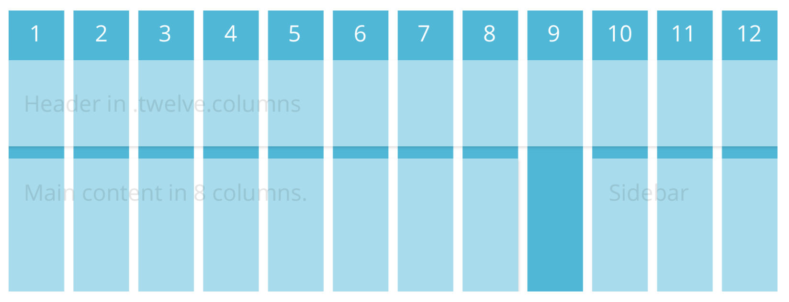

Intro to Responsive Design
Set up your computer for today
Follow along with the slides at:
alexandraatzl.com/gdi-responsive
Download the zip of files for class
Unzip the file to your desktop.
Introductions
- What's your name?
- What do you hope to get out of class today?
- What is your favorite animal?
Bad user experiences are sad.
Responsive Design gets it.
And it's here to make things right.
In this class we will:
- Discover the ideology behind responsive design and why it's important
- Update a fixed-width website to make it responsive
- Do math and like it :-)
- Explore frameworks and design tools that help us plan for responsive
- Learn some best practices
What exactly is Responsive Design?
Responsive Design is the practice of designing and developing websites that allow the user to enjoy its features no matter what device they're viewing it on.
Why should we care?
- There are roughly 1.91 billion smartphone users worldwide. 1
- 51% of digital media usage in the U.S. occurs on a mobile device, with 42% on a desktop or laptop computer. 2
- Between 2010 and 2014, smartphone usage increased 394%. 3
- 10% of Americans do not have any other form of high-speed internet access at home beyond their phone's data plan. 4
- SMS Global: Smartphone Ownership, Usage and Penetration by Country
- Smart Insights: Insights from KPCB U.S. and Global Internet Trends 2015 Report
- ComScore: Mobile Internet Usage Skyrockets
- Pew Reasearch Center: U.S. Smartphone Use in 2015
Mobile web usage surpassed desktop internet usage in 2015. Our phones ARE our computers.
A few devices to consider

Responsive's roots
Responsive Web Design was first coined by Ethan Marcotte in the May 2010 issue of A List Apart.
He also wrote this very nice book and owns the website Responsivewebdesign.com, which are both excellent resources.
It's not just about screen widths
When you have less screen real estate available, you need to focus on the most important content and calls to action; extraneous elements and decoration simply won't fit.
Responsive design is about creating a layout from content, rather than cramming every possible piece of data or call to action into the given screen area.
Mobile First
It requires a shift in how we think about content.
Really, it's content first. Presenting only the most relevant content to begin with, so that none of it is treated as fluff that needs to be hidden from users.
Designing Mobile-First
Mobile First helps us to:
- embrace simplicity
- get out of our comfort zone and be forced to innovate
- eliminate the bells and whistles (there's no room for them)
- prioritize content
It makes us better designers and developers, and our users will be grateful for it.
Responsive vs. Adaptive
- Responsive web design inherently refers to web design that will respond to any and all screen sizes.
- Adaptive design, on the other hand, adapts to the width of the browser only at specific points.
- The two are different philosophies, and one is not inherently better than the other.

Source: CSS Tricks
Is there anything that Responsive Design is NOT?
Responsive Design is not a replacement for mobile apps, and is not always the go-to solution.
We should assume that people will try to view a website on whatever device they have with them. It's up to us to provide the appropriate solutions for each app, website, and use case.
This is beyond Responsive Design
Sometimes there's another strategy happening, intentional or otherwise. Here's what Target has going on.
An m-dot mobile site, native app, full website on mobile, Cartwheel:

Is your favorite website responsive?
You can enter the URL here: http://www.responsinator.com
(or pull it up on your mobile device for a more accurate view!)Responsive is our solution for this madness
The magic is achieved with these ingredients:
- flexible images
- responsive typography
- CSS3 media queries
- fluid grids
1. Flexible Images
Here are some examples:
max-width- SVG (scalable vector graphics)
- icon fonts
srcset- list multiple image filessizes- give the browser multiple possible widths with media conditionspicture- gives us more control over when different sources are usedsource- used to define sources for a picture element
1. Flexible Images
We could have an entire workshop just on flexible images alone!
So, we won't be discussing all of those options tonight, but this article does a great job of detailing them.
1. Flexible Images: max-width
For now, we'll be using max-width.
img {
max-width: 100%;
}1. Flexible Images: max-width
Unlike text, which scales easily on smaller devices, images can be a bit tricky.
Unless we give them a max-width, images will overflow their container elements if they're too big for them.
1. Flexible Images: max-width
By assigning a max-width to images, they'll only expand to the size of their parent.
If their parent has no width (which it probably does), it'll just expand to the width of the viewport.
2. Responsive Typography
Once upon a time, in 2005, type was always set in px.
But today we need to account for our billions of devices and a range of pixel densities. So, we use more flexible units for setting our type, like ems or rems.
ems are a measurement relative to the font-size of the parent element (more info)
rems are also a relative measurement, but unlike ems, rems are relative to the root (a.k.a. <html>) font-size (more info)
Good to know: The browser default for fonts is 16px, which is 1em or 1rem.
2. Responsive Typography
So if ems and rems are both relative measurements that will scale up and down with the overall page size, does it matter if we use one or the other?
Not quite. It really depends on your use case: do you need a property to scale based on font-size? If so, use ems. If not, use rems.
Check out this great write-up of the pros and cons of each unit for a more in-depth look.
3. CSS3 Media Queries
CSS3 media queries let us assign breakpoints that correspond to the pixel width of your desktop monitor, tablet, e-reader, or phone display.
These breakpoints tell the content what to do when the display (or viewport) falls within these widths.
4. Fluid Grids
First we define a width for our grid's container.
We divide the content up into a set of columns, usually 12.
Then we design elements that can scale in size. Instead of assigning a specific pixel dimension, we use percentages.
Whenever the device width changes, the grids change in width to scale with the device.
Responsive Techniques in Action
- Something really basic with a fluid grid
- Some shameless self-promotion
- Something a bit more complicated (and a great write-up of how they did it).
- Smashing Magazine, because this site is overflowing with web goodies.
Let's take a peek at some awesomeness
Let's go to our Exercise folder, find the _MediaQueryMagic folder, and open awesomeness.html in our browser.
Then let's go to our styles folder and open styles.css in Sublime Text.
Let's take a peek at some awesomeness
We can see the breakpoints and styles assigned to this page in our media queries as we narrow our browser window.

The website we'll be working with next
Let's open working.html in our browser.
Not Responsive :-(
What if we don't want to start all over and make a totally new responsive site? We just want to make the existing site responsive.
Making it Responsive
We can totally make the following adjustments and get this site looking lovely on a mobile device:
- change up our font units
- make the existing grid fluid
- add CSS3 media queries
This will suit our needs because our site is small and manageable. But if you're starting a shiny new project, we'll explore some other options in a bit.
Making it Responsive: Typography
We're going to use ems today.
The first thing we need to do is change the font sizes from px to ems.
There's a handy formula for this:
target ÷ context = result
So if we're converting 24px to ems,
and 16px is the default size (context), we calculate:
24 (target) ÷ 16 (context) = 1.5 (result)
24px is 1.5 times greater than 16px,
so our font-size is 1.5em.
Making it Responsive: Typography
For times when you are not in the mood for math, we have pxtoem.com
Let's Develop It!
Let's open styles.css in Sublime Text.
Find all of the font-sizes that have px and convert them to the correct em sizes.
Use the formula
target ÷ context = result
or use the pxtoem.com chart/calculator
We'll work through a few together…
Making it Responsive: Typography
So we can keep track of what we changed, let's comment out the original px font-sizes when we add in our newly calculated em sizes.
Here's our first conversion as an example. Let's convert the h1 font-size:
h1 {
color: #ffffff;
font-size: 2.25em; /* font-size: 36px */
font-style: italic;
font-weight: 800;
margin-bottom: 20px;
padding: 10x 0 0;
text-align: center;
}Making it Responsive: Typography
Let's convert the h2 font-size.
h2 {
font-size: 1.6em; /* font-size: 25px */
font-style: italic;
margin: 0 0 10px 0;
}And the .summary p font-size.
.summary p {
color: #d5ecf0;
font-size: 1em; /* font-size: 16px */
font-weight: normal;
padding: 10px 0;
}Making it Responsive: Typography
And lastly let's convert the aside p and the footer font-sizes:
aside p {
color: yellowgreen;
font-size: .875em; /* font-size: 14px */
font-weight: bold;
padding: 10px 20px;
text-align: left;
}
footer {
clear: both;
color: #60b9ce;
display: block;
font-size: .875em; /* font-size: 14px */
height: 35px;
margin-top: -35px;
padding-top: 120px;
text-align: center;
width: 900px;
}Wasn't that FUN?
It wasn't horrible, at least our fonts are now flexible.
And now we have a reminder of why it's better to start off with ems right from the start.
Break time!
Making it Responsive: A Fluid Grid
We still have fixed-width sizing on the structural containers (wrapper, nav, gallery, etc.).
By converting their pixel widths to percentages, we'll be another step closer.
Making it Responsive:
A Fluid Grid
The same formula we used to convert fonts from px to ems can be used to convert pixel widths to percentages.
target ÷ context = result
The wrapper around our content is 900px wide, that's our target. Let's say the layout was designed to be 960px wide, that's our context. To convert the wrapper to a percentage, we do the math.
900 ÷ 960 = 0.9375
Move the decimal over two spots for the percentage.
Our 900px wrapper is now 93.75%.
Skipping the math.
Since we have a lot of nested containers in our working site, and want to keep this moving, we're going to make some arbitrary conversions and not do all the math on each one.
We'll use some nice round numbers, which is just fine for our single-page site.
Let's Develop It!
Go back to styles.css and start identifying our fixed-width containers.
In order to keep track of what we changed, comment out the original pixel widths and replace them with percentages.
Let's do the first few together…
Wrapper & Header
On #wrapper we should also change the margin from px to a percentage.
#wrapper {
margin: 0 10%; /* margin: 0 auto */
width: 80%; /* width: 900px; */
}
header {
background: #004488;
border-bottom-left-radius: 15px;
border-bottom-right-radius: 15px;
border-bottom: 3px solid lightblue;
height: auto;
margin: 0;
width: 100%; /* width: 900px; */
}Let's convert the nav and the nav li widths.
nav {
float: left;
font-family: 'Open Sans', sans-serif;
font-weight: bold;
margin: 10px 0 50px;
text-align: left;
width: 70%; /* width: 700px */
}
nav li {
display: inline;
padding: 5px 20px 15px 0;
width: 100%; /* width: 900px; */
}Let's convert the #social and the .summary widths.
#social {
float: right;
margin: 20px 0 50px;
padding: 0;
text-align: right;
width: 30%; /* width: 200px */
}
.summary {
clear: both;
float: left;
padding: 5px 0 10px;
width: 100%; /* width: 900px */
}Let's convert the #feature img and the #gallery widths.
#feature img {
padding: 0;
width: 100%; /* width: 800px */
z-index: 0;
}
#gallery {
float: left;
margin: 0;
padding: 0;
width: 60%; /* width: 550px */
}Let's convert the #thumbs li, #thumbs li img, and the aside widths.
#thumbs li {
float: left;
padding: 0 20px 20px 0;
width: 20%; /* width: 80px */
}
#thumbs li img {
width: 100%; /* width: 80px */
}
aside {
background: #004488;
float: right;
height: auto;
margin: 0;
padding: 0;
width: 40%; /* width:250px; */
}Let's convert the #footer width and add a max-width to images.
footer {
clear: both;
color: #60b9ce;
display: block;
font-size: .875em; /* font-size: 14px */
height: 35px;
margin-top: -35px;
padding-top: 120px;
text-align: center;
width: 100%; /* width: 900px */
}
img {
max-width: 100%;
}Check out your site now!
Do things look better?
Let's take some time to get things right before we move on.
If you need to catch up, you can copy and paste the styles.css from our finished-responsive-website folder:
Media Queries
If you've ever created a print stylesheet for a website (media="print") then you're already familiar with the idea of creating a specific stylesheet that comes into play under certain conditions.
@media print {
#header img {
display: none;
}
}If you can write CSS, you can write Media Queries
Media Queries are just an extra layer of instructions that work alongside your existing CSS. These instructions come into play when certain constraints are defined:
- width and height (browser window or device viewport)
- orientation (landscape or portrait mode)
- resolution (retina display)
Media Queries
They look only slightly different than regular CSS, just note the extra set of curly brackets.
@media only screen and (max-width: 768px) { /* <-- This opening curly bracket is for the media query */
#gallery {
clear: both;
width: 100%;
}
#thumbs li img {
width: 100%;
}
aside {
clear: both;
margin: 0 auto;
width: 100%;
}
} /* <-- This bracket closes the media query */Let's Develop It!
We can make a few small changes to our sample website right now and see what happens.
Let's go back to our styles.css file.
Adding Media Queries
Since all of the CSS we've written so far looks best on mostly the desktop view, let's customize it a bit for a smaller screen, like a tablet.
Adding Media Queries
At the very bottom of our styles.css, type the following:
@media screen and (max-width: 1024px) {
#gallery {
clear: both;
width: 100%;
}
#thumbs li img {
width: 100%;
}
aside {
clear: both;
margin: 0 auto;
width: 100%;
}
}Adding Media Queries
Adding Media Queries
styles.css, type the following:@media screen and (max-width: 667px) {
#thumbs li {
clear: both;
width: 100%;
}
}Ta da!
Now, our site should respond
appropriately to any screen size.
Responsive Frameworks
Maybe it turns out you've got a site that's going to be a bit more complex, or you just want to start with a clean slate.
Here's where responsive frameworks can come in.
What Frameworks Give Us
Every framework is different, but most offer some form of the following:
- a grid system
- pre-defined CSS classes for typography styles, layout components, etc.
- helper classes for clearing floats, quick adjustments, etc.
- templates or pre-defined layouts
- Javascript components
- and lots more!
Frameworks: The Grid
What we care about most, however, is the grid.
This is simply a 12-column flexible grid that can scale out to an arbitrary size (defined by the max-width of the row) that's easily nested. The widths are percentages. They've done the math for us!
Building a Custom Grid
- Creating your own responsive grid isn't actually that hard! Basic grids contain four main building blocks:
- container: sets the width of the entire grid
- rows: keep columns inside from overflowing into other rows
- columns groups elements in your layout and displays them alongside one another within a row
- gutters: the spaces between the columns
- If you want to explore creating your own grid system further, check out this overview.
Building a Custom Grid
You can check out an example custom grid in
the demo files folder.
Responsivize Responsibly
We have a responsibility to do the right thing for our users. It's not an easy job, but you've all taken the first step in helping improve the web just by being here!
Go forth and tackle your next project with a fresh perspective!